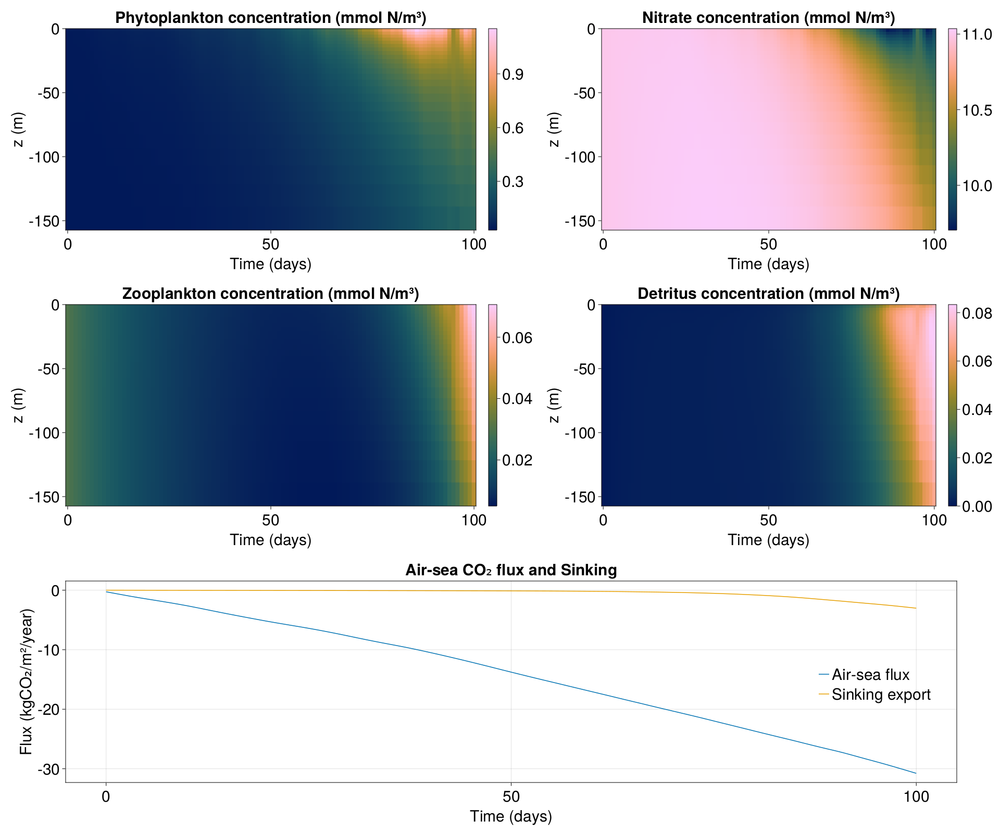

One dimensional column forced by external data with carbonate chemistry
In this example we will setup a simple 1D column with the LOBSTER biogeochemical model and observe its evolution. This demonstrates:
- How to setup OceanBioME's biogeochemical models
- How to load external forcing data
- How to run with optional tracer sets such as carbonate chemistry
- How to setup a non-uniform grid for better near surface resolution
- How to visualise results
This is forced by mixing layer depth and surface photosynthetically available radiation (PAR) data from the Mercator Ocean model and NASA VIIRS observations
Install dependencies
First we will check we have the dependencies installed
using Pkg
pkg"add OceanBioME, Oceananigans, Printf, Plots, GLMakie, NetCDF, JLD2, DataDeps, Interpolations"Model setup
First load the required packages
using Oceananigans, Random, Printf, NetCDF, Interpolations, DataDeps
using Oceananigans.Units
using Oceananigans.Operators: ∂zᶜᶜᶜ
using OceanBioME
year = years = 365days # just for these idealised cases3.1536e7Load external forcing data
Loading the forcing data from our online copy
dd = DataDep(
"example_data",
"example data from subpolar re analysis and observational products",
"https://github.com/OceanBioME/OceanBioME_example_data/raw/main/subpolar.nc"
)
register(dd)
filename = datadep"example_data/subpolar.nc"
times = ncread(filename, "time")
temp = ncread(filename, "temp")
salinity = ncread(filename, "so")
mld = ncread(filename, "mld")
par = ncread(filename, "par")
temperature_itp = LinearInterpolation(times, temp)
salinity_itp = LinearInterpolation(times, salinity)
mld_itp = LinearInterpolation(times, mld)
PAR_itp = LinearInterpolation(times, par)
t_function(x, y, z, t) = temperature_itp(mod(t, 364days))
s_function(x, y, z, t) = salinity_itp(mod(t, 364days))
surface_PAR(x, y, t) = PAR_itp(mod(t, 364days))
κₜ(x, y, z, t) = 2e-2 * max(1 - (z + mld_itp(mod(t, 364days)) / 2) ^ 2 / (mld_itp(mod(t, 364days)) / 2) ^ 2, 0) + 1e-4κₜ (generic function with 1 method)Grid and PAR field
Define the grid (in this case a non uniform grid for better resolution near the surface) and an extra Oceananigans field for the PAR to be stored in
Nz = 33
Lz = 600
refinement = 10
stretching = 5.754
h(k) = (k - 1) / Nz
ζ₀(k) = 1 + (h(k) - 1) / refinement
Σ(k) = (1 - exp(-stretching * h(k))) / (1 - exp(-stretching))
z_faces(k) = Lz * (ζ₀(k) * Σ(k) - 1)
grid = RectilinearGrid(size = (1, 1, Nz), x = (0, 20), y = (0, 20), z = z_faces)1×1×33 RectilinearGrid{Float64, Oceananigans.Grids.Periodic, Oceananigans.Grids.Periodic, Oceananigans.Grids.Bounded} on Oceananigans.Architectures.CPU with 3×3×3 halo
├── Periodic x ∈ [0.0, 20.0) regularly spaced with Δx=20.0
├── Periodic y ∈ [0.0, 20.0) regularly spaced with Δy=20.0
└── Bounded z ∈ [-600.0, 0.0] variably spaced with min(Δz)=2.18055, max(Δz)=86.9713Biogeochemical and Oceananigans model
Here we instantiate the LOBSTER model with carbonate chemistry and a surface flux of DIC (CO₂)
CO₂_flux = GasExchange(; gas = :CO₂, temperature = t_function, salinity = s_function)
model = NonhydrostaticModel(; grid,
closure = ScalarDiffusivity(ν=κₜ, κ=κₜ),
biogeochemistry = LOBSTER(; grid,
surface_phytosynthetically_active_radiation = surface_PAR,
carbonates = true),
boundary_conditions = (DIC = FieldBoundaryConditions(top = CO₂_flux), ),
advection = nothing,)
set!(model, P = 0.03, Z = 0.03, NO₃ = 11.0, NH₄ = 0.05, DIC = 2200.0, Alk = 2400.0)Simulation
Next we setup the simulation along with some callbacks that:
- Show the progress of the simulation
- Store the output
- Prevent the tracers from going negative from numerical error (see discussion of this in the positivity preservation implimentation page)
- Adapt the timestep length to reduce the run time
simulation = Simulation(model, Δt=1minutes, stop_time=100days)
progress_message(sim) = @printf("Iteration: %04d, time: %s, Δt: %s, wall time: %s\n",
iteration(sim),
prettytime(sim),
prettytime(sim.Δt),
prettytime(sim.run_wall_time))
simulation.callbacks[:progress] = Callback(progress_message, IterationInterval(100))
filename = "data_forced"
simulation.output_writers[:profiles] = JLD2OutputWriter(model,
merge(model.tracers, model.auxiliary_fields),
filename = "$filename.jld2",
schedule = TimeInterval(1day),
overwrite_existing = true)JLD2OutputWriter scheduled on TimeInterval(1 day):
├── filepath: ./data_forced.jld2
├── 10 outputs: (NO₃, NH₄, P, Z, sPOM, bPOM, DOM, DIC, Alk, PAR)
├── array type: Array{Float64}
├── including: [:grid, :coriolis, :buoyancy, :closure]
└── max filesize: Inf YiBTODO: make tendency callback to force no NaNs in tendencies
scale_negative_tracers = ScaleNegativeTracers(; model, tracers = (:NO₃, :NH₄, :P, :Z, :sPOM, :bPOM, :DOM))
simulation.callbacks[:neg] = Callback(scale_negative_tracers; callsite = UpdateStateCallsite())
wizard = TimeStepWizard(cfl = 0.2, diffusive_cfl = 0.2, max_change = 2.0, min_change = 0.5, cell_diffusion_timescale = column_diffusion_timescale, cell_advection_timescale = column_advection_timescale)
simulation.callbacks[:wizard] = Callback(wizard, IterationInterval(10))Callback of TimeStepWizard(cfl=0.2, max_Δt=Inf, min_Δt=0.0) on IterationInterval(10)Run!
Finally we run the simulation
run!(simulation)[ Info: Initializing simulation...
Iteration: 0000, time: 0 seconds, Δt: 1 minute, wall time: 0 seconds
[ Info: ... simulation initialization complete (6.086 seconds)
[ Info: Executing initial time step...
[ Info: ... initial time step complete (1.490 minutes).
Iteration: 0100, time: 5.043 hours, Δt: 3.140 minutes, wall time: 1.599 minutes
Iteration: 0200, time: 10.277 hours, Δt: 3.140 minutes, wall time: 1.606 minutes
Iteration: 0300, time: 15.510 hours, Δt: 3.140 minutes, wall time: 1.612 minutes
Iteration: 0400, time: 20.743 hours, Δt: 3.140 minutes, wall time: 1.619 minutes
Iteration: 0500, time: 1.081 days, Δt: 3.140 minutes, wall time: 1.625 minutes
Iteration: 0600, time: 1.299 days, Δt: 3.140 minutes, wall time: 1.632 minutes
Iteration: 0700, time: 1.517 days, Δt: 3.140 minutes, wall time: 1.638 minutes
Iteration: 0800, time: 1.735 days, Δt: 3.140 minutes, wall time: 1.644 minutes
Iteration: 0900, time: 1.953 days, Δt: 3.140 minutes, wall time: 1.651 minutes
Iteration: 1000, time: 2.170 days, Δt: 3.140 minutes, wall time: 1.657 minutes
Iteration: 1100, time: 2.388 days, Δt: 3.140 minutes, wall time: 1.664 minutes
Iteration: 1200, time: 2.606 days, Δt: 3.140 minutes, wall time: 1.670 minutes
Iteration: 1300, time: 2.824 days, Δt: 3.140 minutes, wall time: 1.677 minutes
Iteration: 1400, time: 3.041 days, Δt: 3.140 minutes, wall time: 1.683 minutes
Iteration: 1500, time: 3.259 days, Δt: 3.140 minutes, wall time: 1.690 minutes
Iteration: 1600, time: 3.478 days, Δt: 3.140 minutes, wall time: 1.696 minutes
Iteration: 1700, time: 3.696 days, Δt: 3.140 minutes, wall time: 1.703 minutes
Iteration: 1800, time: 3.914 days, Δt: 3.140 minutes, wall time: 1.709 minutes
Iteration: 1900, time: 4.131 days, Δt: 3.140 minutes, wall time: 1.716 minutes
Iteration: 2000, time: 4.349 days, Δt: 3.140 minutes, wall time: 1.722 minutes
Iteration: 2100, time: 4.567 days, Δt: 3.140 minutes, wall time: 1.729 minutes
Iteration: 2200, time: 4.785 days, Δt: 3.140 minutes, wall time: 1.735 minutes
Iteration: 2300, time: 5.002 days, Δt: 3.140 minutes, wall time: 1.742 minutes
Iteration: 2400, time: 5.220 days, Δt: 3.140 minutes, wall time: 1.748 minutes
Iteration: 2500, time: 5.438 days, Δt: 3.140 minutes, wall time: 1.755 minutes
Iteration: 2600, time: 5.656 days, Δt: 3.140 minutes, wall time: 1.761 minutes
Iteration: 2700, time: 5.874 days, Δt: 3.140 minutes, wall time: 1.767 minutes
Iteration: 2800, time: 6.092 days, Δt: 3.140 minutes, wall time: 1.774 minutes
Iteration: 2900, time: 6.310 days, Δt: 3.140 minutes, wall time: 1.781 minutes
Iteration: 3000, time: 6.528 days, Δt: 3.140 minutes, wall time: 1.787 minutes
Iteration: 3100, time: 6.746 days, Δt: 3.140 minutes, wall time: 1.793 minutes
Iteration: 3200, time: 6.964 days, Δt: 3.140 minutes, wall time: 1.799 minutes
Iteration: 3300, time: 7.181 days, Δt: 3.140 minutes, wall time: 1.806 minutes
Iteration: 3400, time: 7.399 days, Δt: 3.140 minutes, wall time: 1.813 minutes
Iteration: 3500, time: 7.617 days, Δt: 3.140 minutes, wall time: 1.819 minutes
Iteration: 3600, time: 7.835 days, Δt: 3.140 minutes, wall time: 1.825 minutes
Iteration: 3700, time: 8.052 days, Δt: 3.140 minutes, wall time: 1.832 minutes
Iteration: 3800, time: 8.270 days, Δt: 3.140 minutes, wall time: 1.838 minutes
Iteration: 3900, time: 8.488 days, Δt: 3.140 minutes, wall time: 1.845 minutes
Iteration: 4000, time: 8.706 days, Δt: 3.140 minutes, wall time: 1.851 minutes
Iteration: 4100, time: 8.925 days, Δt: 3.140 minutes, wall time: 1.858 minutes
Iteration: 4200, time: 9.142 days, Δt: 3.140 minutes, wall time: 1.864 minutes
Iteration: 4300, time: 9.360 days, Δt: 3.140 minutes, wall time: 1.871 minutes
Iteration: 4400, time: 9.578 days, Δt: 3.140 minutes, wall time: 1.877 minutes
Iteration: 4500, time: 9.796 days, Δt: 3.140 minutes, wall time: 1.884 minutes
Iteration: 4600, time: 10.013 days, Δt: 3.140 minutes, wall time: 1.890 minutes
Iteration: 4700, time: 10.231 days, Δt: 3.140 minutes, wall time: 1.897 minutes
Iteration: 4800, time: 10.449 days, Δt: 3.140 minutes, wall time: 1.903 minutes
Iteration: 4900, time: 10.667 days, Δt: 3.140 minutes, wall time: 1.910 minutes
Iteration: 5000, time: 10.885 days, Δt: 3.140 minutes, wall time: 1.916 minutes
Iteration: 5100, time: 11.102 days, Δt: 3.140 minutes, wall time: 1.923 minutes
Iteration: 5200, time: 11.321 days, Δt: 3.140 minutes, wall time: 1.929 minutes
Iteration: 5300, time: 11.539 days, Δt: 3.140 minutes, wall time: 1.936 minutes
Iteration: 5400, time: 11.757 days, Δt: 3.140 minutes, wall time: 1.942 minutes
Iteration: 5500, time: 11.975 days, Δt: 3.140 minutes, wall time: 1.949 minutes
Iteration: 5600, time: 12.192 days, Δt: 3.140 minutes, wall time: 1.955 minutes
Iteration: 5700, time: 12.410 days, Δt: 3.140 minutes, wall time: 1.962 minutes
Iteration: 5800, time: 12.628 days, Δt: 3.140 minutes, wall time: 1.968 minutes
Iteration: 5900, time: 12.846 days, Δt: 3.140 minutes, wall time: 1.974 minutes
Iteration: 6000, time: 13.063 days, Δt: 3.140 minutes, wall time: 1.981 minutes
Iteration: 6100, time: 13.281 days, Δt: 3.140 minutes, wall time: 1.988 minutes
Iteration: 6200, time: 13.499 days, Δt: 3.140 minutes, wall time: 1.994 minutes
Iteration: 6300, time: 13.717 days, Δt: 3.140 minutes, wall time: 2.000 minutes
Iteration: 6400, time: 13.935 days, Δt: 3.140 minutes, wall time: 2.006 minutes
Iteration: 6500, time: 14.153 days, Δt: 3.140 minutes, wall time: 2.013 minutes
Iteration: 6600, time: 14.371 days, Δt: 3.140 minutes, wall time: 2.020 minutes
Iteration: 6700, time: 14.589 days, Δt: 3.140 minutes, wall time: 2.026 minutes
Iteration: 6800, time: 14.807 days, Δt: 3.140 minutes, wall time: 2.032 minutes
Iteration: 6900, time: 15.024 days, Δt: 3.140 minutes, wall time: 2.039 minutes
Iteration: 7000, time: 15.242 days, Δt: 3.140 minutes, wall time: 2.045 minutes
Iteration: 7100, time: 15.460 days, Δt: 3.140 minutes, wall time: 2.052 minutes
Iteration: 7200, time: 15.678 days, Δt: 3.140 minutes, wall time: 2.058 minutes
Iteration: 7300, time: 15.896 days, Δt: 3.140 minutes, wall time: 2.064 minutes
Iteration: 7400, time: 16.113 days, Δt: 3.140 minutes, wall time: 2.071 minutes
Iteration: 7500, time: 16.331 days, Δt: 3.140 minutes, wall time: 2.078 minutes
Iteration: 7600, time: 16.549 days, Δt: 3.140 minutes, wall time: 2.084 minutes
Iteration: 7700, time: 16.768 days, Δt: 3.140 minutes, wall time: 2.090 minutes
Iteration: 7800, time: 16.986 days, Δt: 3.140 minutes, wall time: 2.097 minutes
Iteration: 7900, time: 17.203 days, Δt: 3.140 minutes, wall time: 2.103 minutes
Iteration: 8000, time: 17.421 days, Δt: 3.140 minutes, wall time: 2.110 minutes
Iteration: 8100, time: 17.639 days, Δt: 3.140 minutes, wall time: 2.116 minutes
Iteration: 8200, time: 17.857 days, Δt: 3.140 minutes, wall time: 2.123 minutes
Iteration: 8300, time: 18.074 days, Δt: 3.140 minutes, wall time: 2.129 minutes
Iteration: 8400, time: 18.292 days, Δt: 3.140 minutes, wall time: 2.136 minutes
Iteration: 8500, time: 18.510 days, Δt: 3.140 minutes, wall time: 2.142 minutes
Iteration: 8600, time: 18.728 days, Δt: 3.140 minutes, wall time: 2.149 minutes
Iteration: 8700, time: 18.946 days, Δt: 3.140 minutes, wall time: 2.155 minutes
Iteration: 8800, time: 19.164 days, Δt: 3.140 minutes, wall time: 2.162 minutes
Iteration: 8900, time: 19.382 days, Δt: 3.140 minutes, wall time: 2.168 minutes
Iteration: 9000, time: 19.600 days, Δt: 3.140 minutes, wall time: 2.175 minutes
Iteration: 9100, time: 19.818 days, Δt: 3.140 minutes, wall time: 2.181 minutes
Iteration: 9200, time: 20.035 days, Δt: 3.140 minutes, wall time: 2.188 minutes
Iteration: 9300, time: 20.253 days, Δt: 3.140 minutes, wall time: 2.194 minutes
Iteration: 9400, time: 20.471 days, Δt: 3.140 minutes, wall time: 2.201 minutes
Iteration: 9500, time: 20.689 days, Δt: 3.140 minutes, wall time: 2.207 minutes
Iteration: 9600, time: 20.907 days, Δt: 3.140 minutes, wall time: 2.213 minutes
Iteration: 9700, time: 21.124 days, Δt: 3.140 minutes, wall time: 2.220 minutes
Iteration: 9800, time: 21.342 days, Δt: 3.140 minutes, wall time: 2.226 minutes
Iteration: 9900, time: 21.560 days, Δt: 3.140 minutes, wall time: 2.233 minutes
Iteration: 10000, time: 21.778 days, Δt: 3.140 minutes, wall time: 2.239 minutes
Iteration: 10100, time: 21.997 days, Δt: 3.140 minutes, wall time: 2.245 minutes
Iteration: 10200, time: 22.214 days, Δt: 3.140 minutes, wall time: 2.252 minutes
Iteration: 10300, time: 22.432 days, Δt: 3.140 minutes, wall time: 2.259 minutes
Iteration: 10400, time: 22.650 days, Δt: 3.140 minutes, wall time: 2.265 minutes
Iteration: 10500, time: 22.868 days, Δt: 3.140 minutes, wall time: 2.271 minutes
Iteration: 10600, time: 23.085 days, Δt: 3.140 minutes, wall time: 2.278 minutes
Iteration: 10700, time: 23.303 days, Δt: 3.140 minutes, wall time: 2.285 minutes
Iteration: 10800, time: 23.521 days, Δt: 3.140 minutes, wall time: 2.291 minutes
Iteration: 10900, time: 23.739 days, Δt: 3.140 minutes, wall time: 2.297 minutes
Iteration: 11000, time: 23.957 days, Δt: 3.140 minutes, wall time: 2.304 minutes
Iteration: 11100, time: 24.174 days, Δt: 3.140 minutes, wall time: 2.310 minutes
Iteration: 11200, time: 24.392 days, Δt: 3.140 minutes, wall time: 2.317 minutes
Iteration: 11300, time: 24.611 days, Δt: 3.140 minutes, wall time: 2.323 minutes
Iteration: 11400, time: 24.829 days, Δt: 3.140 minutes, wall time: 2.330 minutes
Iteration: 11500, time: 25.046 days, Δt: 3.140 minutes, wall time: 2.336 minutes
Iteration: 11600, time: 25.264 days, Δt: 3.140 minutes, wall time: 2.343 minutes
Iteration: 11700, time: 25.482 days, Δt: 3.140 minutes, wall time: 2.349 minutes
Iteration: 11800, time: 25.700 days, Δt: 3.140 minutes, wall time: 2.356 minutes
Iteration: 11900, time: 25.918 days, Δt: 3.140 minutes, wall time: 2.362 minutes
Iteration: 12000, time: 26.135 days, Δt: 3.140 minutes, wall time: 2.369 minutes
Iteration: 12100, time: 26.353 days, Δt: 3.140 minutes, wall time: 2.375 minutes
Iteration: 12200, time: 26.571 days, Δt: 3.140 minutes, wall time: 2.382 minutes
Iteration: 12300, time: 26.789 days, Δt: 3.140 minutes, wall time: 2.388 minutes
Iteration: 12400, time: 27.007 days, Δt: 3.140 minutes, wall time: 2.395 minutes
Iteration: 12500, time: 27.225 days, Δt: 3.140 minutes, wall time: 2.401 minutes
Iteration: 12600, time: 27.443 days, Δt: 3.140 minutes, wall time: 2.408 minutes
Iteration: 12700, time: 27.661 days, Δt: 3.140 minutes, wall time: 2.414 minutes
Iteration: 12800, time: 27.879 days, Δt: 3.140 minutes, wall time: 2.421 minutes
Iteration: 12900, time: 28.096 days, Δt: 3.140 minutes, wall time: 2.427 minutes
Iteration: 13000, time: 28.314 days, Δt: 3.140 minutes, wall time: 2.435 minutes
Iteration: 13100, time: 28.532 days, Δt: 3.140 minutes, wall time: 2.441 minutes
Iteration: 13200, time: 28.750 days, Δt: 3.140 minutes, wall time: 2.447 minutes
Iteration: 13300, time: 28.968 days, Δt: 3.140 minutes, wall time: 2.454 minutes
Iteration: 13400, time: 29.185 days, Δt: 3.140 minutes, wall time: 2.461 minutes
Iteration: 13500, time: 29.403 days, Δt: 3.140 minutes, wall time: 2.467 minutes
Iteration: 13600, time: 29.621 days, Δt: 3.140 minutes, wall time: 2.473 minutes
Iteration: 13700, time: 29.840 days, Δt: 3.140 minutes, wall time: 2.479 minutes
Iteration: 13800, time: 30.057 days, Δt: 3.140 minutes, wall time: 2.486 minutes
Iteration: 13900, time: 30.275 days, Δt: 3.140 minutes, wall time: 2.493 minutes
Iteration: 14000, time: 30.493 days, Δt: 3.140 minutes, wall time: 2.499 minutes
Iteration: 14100, time: 30.711 days, Δt: 3.140 minutes, wall time: 2.505 minutes
Iteration: 14200, time: 30.929 days, Δt: 3.140 minutes, wall time: 2.512 minutes
Iteration: 14300, time: 31.146 days, Δt: 3.140 minutes, wall time: 2.518 minutes
Iteration: 14400, time: 31.364 days, Δt: 3.140 minutes, wall time: 2.524 minutes
Iteration: 14500, time: 31.582 days, Δt: 3.140 minutes, wall time: 2.531 minutes
Iteration: 14600, time: 31.800 days, Δt: 3.140 minutes, wall time: 2.537 minutes
Iteration: 14700, time: 32.017 days, Δt: 3.140 minutes, wall time: 2.544 minutes
Iteration: 14800, time: 32.235 days, Δt: 3.140 minutes, wall time: 2.550 minutes
Iteration: 14900, time: 32.454 days, Δt: 3.140 minutes, wall time: 2.557 minutes
Iteration: 15000, time: 32.672 days, Δt: 3.140 minutes, wall time: 2.563 minutes
Iteration: 15100, time: 32.890 days, Δt: 3.140 minutes, wall time: 2.570 minutes
Iteration: 15200, time: 33.107 days, Δt: 3.140 minutes, wall time: 2.576 minutes
Iteration: 15300, time: 33.325 days, Δt: 3.140 minutes, wall time: 2.583 minutes
Iteration: 15400, time: 33.543 days, Δt: 3.140 minutes, wall time: 2.589 minutes
Iteration: 15500, time: 33.761 days, Δt: 3.140 minutes, wall time: 2.595 minutes
Iteration: 15600, time: 33.979 days, Δt: 3.140 minutes, wall time: 2.602 minutes
Iteration: 15700, time: 34.196 days, Δt: 3.140 minutes, wall time: 2.608 minutes
Iteration: 15800, time: 34.414 days, Δt: 3.140 minutes, wall time: 2.615 minutes
Iteration: 15900, time: 34.632 days, Δt: 3.140 minutes, wall time: 2.621 minutes
Iteration: 16000, time: 34.850 days, Δt: 3.140 minutes, wall time: 2.628 minutes
Iteration: 16100, time: 35.068 days, Δt: 3.140 minutes, wall time: 2.635 minutes
Iteration: 16200, time: 35.286 days, Δt: 3.140 minutes, wall time: 2.641 minutes
Iteration: 16300, time: 35.504 days, Δt: 3.140 minutes, wall time: 2.647 minutes
Iteration: 16400, time: 35.722 days, Δt: 3.140 minutes, wall time: 2.654 minutes
Iteration: 16500, time: 35.940 days, Δt: 3.140 minutes, wall time: 2.660 minutes
Iteration: 16600, time: 36.157 days, Δt: 3.140 minutes, wall time: 2.667 minutes
Iteration: 16700, time: 36.375 days, Δt: 3.140 minutes, wall time: 2.673 minutes
Iteration: 16800, time: 36.593 days, Δt: 3.140 minutes, wall time: 2.679 minutes
Iteration: 16900, time: 36.811 days, Δt: 3.140 minutes, wall time: 2.686 minutes
Iteration: 17000, time: 37.028 days, Δt: 3.140 minutes, wall time: 2.692 minutes
Iteration: 17100, time: 37.246 days, Δt: 3.140 minutes, wall time: 2.699 minutes
Iteration: 17200, time: 37.464 days, Δt: 3.140 minutes, wall time: 2.705 minutes
Iteration: 17300, time: 37.683 days, Δt: 3.140 minutes, wall time: 2.712 minutes
Iteration: 17400, time: 37.901 days, Δt: 3.140 minutes, wall time: 2.718 minutes
Iteration: 17500, time: 38.118 days, Δt: 3.140 minutes, wall time: 2.725 minutes
Iteration: 17600, time: 38.336 days, Δt: 3.140 minutes, wall time: 2.731 minutes
Iteration: 17700, time: 38.554 days, Δt: 3.140 minutes, wall time: 2.738 minutes
Iteration: 17800, time: 38.772 days, Δt: 3.140 minutes, wall time: 2.744 minutes
Iteration: 17900, time: 38.990 days, Δt: 3.140 minutes, wall time: 2.750 minutes
Iteration: 18000, time: 39.207 days, Δt: 3.140 minutes, wall time: 2.756 minutes
Iteration: 18100, time: 39.425 days, Δt: 3.140 minutes, wall time: 2.763 minutes
Iteration: 18200, time: 39.643 days, Δt: 3.140 minutes, wall time: 2.769 minutes
Iteration: 18300, time: 39.861 days, Δt: 3.140 minutes, wall time: 2.776 minutes
Iteration: 18400, time: 40.078 days, Δt: 3.140 minutes, wall time: 2.782 minutes
Iteration: 18500, time: 40.297 days, Δt: 3.140 minutes, wall time: 2.789 minutes
Iteration: 18600, time: 40.515 days, Δt: 3.140 minutes, wall time: 2.795 minutes
Iteration: 18700, time: 40.733 days, Δt: 3.140 minutes, wall time: 2.802 minutes
Iteration: 18800, time: 40.951 days, Δt: 3.140 minutes, wall time: 2.808 minutes
Iteration: 18900, time: 41.168 days, Δt: 3.140 minutes, wall time: 2.815 minutes
Iteration: 19000, time: 41.386 days, Δt: 3.140 minutes, wall time: 2.821 minutes
Iteration: 19100, time: 41.604 days, Δt: 3.140 minutes, wall time: 2.828 minutes
Iteration: 19200, time: 41.822 days, Δt: 3.140 minutes, wall time: 2.834 minutes
Iteration: 19300, time: 42.039 days, Δt: 3.140 minutes, wall time: 2.841 minutes
Iteration: 19400, time: 42.257 days, Δt: 3.140 minutes, wall time: 2.847 minutes
Iteration: 19500, time: 42.475 days, Δt: 3.140 minutes, wall time: 2.854 minutes
Iteration: 19600, time: 42.693 days, Δt: 3.140 minutes, wall time: 2.860 minutes
Iteration: 19700, time: 42.911 days, Δt: 3.140 minutes, wall time: 2.866 minutes
Iteration: 19800, time: 43.129 days, Δt: 3.140 minutes, wall time: 2.872 minutes
Iteration: 19900, time: 43.347 days, Δt: 3.140 minutes, wall time: 2.879 minutes
Iteration: 20000, time: 43.565 days, Δt: 3.140 minutes, wall time: 2.885 minutes
Iteration: 20100, time: 43.783 days, Δt: 3.140 minutes, wall time: 2.892 minutes
Iteration: 20200, time: 44 days, Δt: 3.140 minutes, wall time: 2.898 minutes
Iteration: 20300, time: 44.218 days, Δt: 3.140 minutes, wall time: 2.905 minutes
Iteration: 20400, time: 44.436 days, Δt: 3.140 minutes, wall time: 2.911 minutes
Iteration: 20500, time: 44.654 days, Δt: 3.140 minutes, wall time: 2.918 minutes
Iteration: 20600, time: 44.872 days, Δt: 3.140 minutes, wall time: 2.924 minutes
Iteration: 20700, time: 45.089 days, Δt: 3.140 minutes, wall time: 2.930 minutes
Iteration: 20800, time: 45.307 days, Δt: 3.140 minutes, wall time: 2.937 minutes
Iteration: 20900, time: 45.526 days, Δt: 3.140 minutes, wall time: 2.943 minutes
Iteration: 21000, time: 45.744 days, Δt: 3.140 minutes, wall time: 2.949 minutes
Iteration: 21100, time: 45.962 days, Δt: 3.140 minutes, wall time: 2.956 minutes
Iteration: 21200, time: 46.179 days, Δt: 3.140 minutes, wall time: 2.962 minutes
Iteration: 21300, time: 46.397 days, Δt: 3.140 minutes, wall time: 2.969 minutes
Iteration: 21400, time: 46.615 days, Δt: 3.140 minutes, wall time: 2.975 minutes
Iteration: 21500, time: 46.833 days, Δt: 3.140 minutes, wall time: 2.981 minutes
Iteration: 21600, time: 47.050 days, Δt: 3.140 minutes, wall time: 2.988 minutes
Iteration: 21700, time: 47.268 days, Δt: 3.140 minutes, wall time: 2.994 minutes
Iteration: 21800, time: 47.486 days, Δt: 3.140 minutes, wall time: 3.001 minutes
Iteration: 21900, time: 47.704 days, Δt: 3.140 minutes, wall time: 3.007 minutes
Iteration: 22000, time: 47.922 days, Δt: 3.140 minutes, wall time: 3.013 minutes
Iteration: 22100, time: 48.140 days, Δt: 3.140 minutes, wall time: 3.020 minutes
Iteration: 22200, time: 48.358 days, Δt: 3.140 minutes, wall time: 3.027 minutes
Iteration: 22300, time: 48.576 days, Δt: 3.140 minutes, wall time: 3.033 minutes
Iteration: 22400, time: 48.794 days, Δt: 3.140 minutes, wall time: 3.039 minutes
Iteration: 22500, time: 49.011 days, Δt: 3.140 minutes, wall time: 3.046 minutes
Iteration: 22600, time: 49.229 days, Δt: 3.140 minutes, wall time: 3.052 minutes
Iteration: 22700, time: 49.447 days, Δt: 3.140 minutes, wall time: 3.058 minutes
Iteration: 22800, time: 49.665 days, Δt: 3.140 minutes, wall time: 3.065 minutes
Iteration: 22900, time: 49.883 days, Δt: 3.140 minutes, wall time: 3.071 minutes
Iteration: 23000, time: 50.100 days, Δt: 3.140 minutes, wall time: 3.078 minutes
Iteration: 23100, time: 50.318 days, Δt: 3.140 minutes, wall time: 3.084 minutes
Iteration: 23200, time: 50.536 days, Δt: 3.140 minutes, wall time: 3.091 minutes
Iteration: 23300, time: 50.754 days, Δt: 3.140 minutes, wall time: 3.097 minutes
Iteration: 23400, time: 50.973 days, Δt: 3.140 minutes, wall time: 3.103 minutes
Iteration: 23500, time: 51.190 days, Δt: 3.140 minutes, wall time: 3.110 minutes
Iteration: 23600, time: 51.408 days, Δt: 3.140 minutes, wall time: 3.116 minutes
Iteration: 23700, time: 51.626 days, Δt: 3.140 minutes, wall time: 3.123 minutes
Iteration: 23800, time: 51.844 days, Δt: 3.140 minutes, wall time: 3.129 minutes
Iteration: 23900, time: 52.061 days, Δt: 3.140 minutes, wall time: 3.135 minutes
Iteration: 24000, time: 52.279 days, Δt: 3.140 minutes, wall time: 3.142 minutes
Iteration: 24100, time: 52.497 days, Δt: 3.140 minutes, wall time: 3.148 minutes
Iteration: 24200, time: 52.715 days, Δt: 3.140 minutes, wall time: 3.155 minutes
Iteration: 24300, time: 52.933 days, Δt: 3.140 minutes, wall time: 3.161 minutes
Iteration: 24400, time: 53.150 days, Δt: 3.140 minutes, wall time: 3.168 minutes
Iteration: 24500, time: 53.369 days, Δt: 3.140 minutes, wall time: 3.174 minutes
Iteration: 24600, time: 53.587 days, Δt: 3.140 minutes, wall time: 3.180 minutes
Iteration: 24700, time: 53.805 days, Δt: 3.140 minutes, wall time: 3.187 minutes
Iteration: 24800, time: 54.022 days, Δt: 3.140 minutes, wall time: 3.193 minutes
Iteration: 24900, time: 54.240 days, Δt: 3.140 minutes, wall time: 3.199 minutes
Iteration: 25000, time: 54.458 days, Δt: 3.140 minutes, wall time: 3.206 minutes
Iteration: 25100, time: 54.676 days, Δt: 3.140 minutes, wall time: 3.212 minutes
Iteration: 25200, time: 54.894 days, Δt: 3.140 minutes, wall time: 3.219 minutes
Iteration: 25300, time: 55.111 days, Δt: 3.140 minutes, wall time: 3.225 minutes
Iteration: 25400, time: 55.329 days, Δt: 3.140 minutes, wall time: 3.232 minutes
Iteration: 25500, time: 55.547 days, Δt: 3.140 minutes, wall time: 3.238 minutes
Iteration: 25600, time: 55.765 days, Δt: 3.140 minutes, wall time: 3.245 minutes
Iteration: 25700, time: 55.983 days, Δt: 3.140 minutes, wall time: 3.251 minutes
Iteration: 25800, time: 56.201 days, Δt: 3.140 minutes, wall time: 3.258 minutes
Iteration: 25900, time: 56.419 days, Δt: 3.140 minutes, wall time: 3.264 minutes
Iteration: 26000, time: 56.637 days, Δt: 3.140 minutes, wall time: 3.270 minutes
Iteration: 26100, time: 56.855 days, Δt: 3.140 minutes, wall time: 3.276 minutes
Iteration: 26200, time: 57.072 days, Δt: 3.140 minutes, wall time: 3.283 minutes
Iteration: 26300, time: 57.290 days, Δt: 3.140 minutes, wall time: 3.290 minutes
Iteration: 26400, time: 57.508 days, Δt: 3.140 minutes, wall time: 3.296 minutes
Iteration: 26500, time: 57.726 days, Δt: 3.140 minutes, wall time: 3.302 minutes
Iteration: 26600, time: 57.944 days, Δt: 3.140 minutes, wall time: 3.309 minutes
Iteration: 26700, time: 58.161 days, Δt: 3.140 minutes, wall time: 3.315 minutes
Iteration: 26800, time: 58.379 days, Δt: 3.140 minutes, wall time: 3.322 minutes
Iteration: 26900, time: 58.597 days, Δt: 3.140 minutes, wall time: 3.328 minutes
Iteration: 27000, time: 58.816 days, Δt: 3.140 minutes, wall time: 3.335 minutes
Iteration: 27100, time: 59.033 days, Δt: 3.140 minutes, wall time: 3.341 minutes
Iteration: 27200, time: 59.251 days, Δt: 3.140 minutes, wall time: 3.348 minutes
Iteration: 27300, time: 59.469 days, Δt: 3.140 minutes, wall time: 3.354 minutes
Iteration: 27400, time: 59.687 days, Δt: 3.140 minutes, wall time: 3.360 minutes
Iteration: 27500, time: 59.905 days, Δt: 3.140 minutes, wall time: 3.366 minutes
Iteration: 27600, time: 60.122 days, Δt: 3.140 minutes, wall time: 3.373 minutes
Iteration: 27700, time: 60.340 days, Δt: 3.140 minutes, wall time: 3.379 minutes
Iteration: 27800, time: 60.558 days, Δt: 3.140 minutes, wall time: 3.386 minutes
Iteration: 27900, time: 60.776 days, Δt: 3.140 minutes, wall time: 3.392 minutes
Iteration: 28000, time: 60.994 days, Δt: 3.140 minutes, wall time: 3.398 minutes
Iteration: 28100, time: 61.212 days, Δt: 3.140 minutes, wall time: 3.405 minutes
Iteration: 28200, time: 61.430 days, Δt: 3.140 minutes, wall time: 3.411 minutes
Iteration: 28300, time: 61.648 days, Δt: 3.140 minutes, wall time: 3.418 minutes
Iteration: 28400, time: 61.866 days, Δt: 3.140 minutes, wall time: 3.424 minutes
Iteration: 28500, time: 62.083 days, Δt: 3.140 minutes, wall time: 3.431 minutes
Iteration: 28600, time: 62.301 days, Δt: 3.140 minutes, wall time: 3.437 minutes
Iteration: 28700, time: 62.519 days, Δt: 3.140 minutes, wall time: 3.444 minutes
Iteration: 28800, time: 62.737 days, Δt: 3.140 minutes, wall time: 3.450 minutes
Iteration: 28900, time: 62.955 days, Δt: 3.140 minutes, wall time: 3.457 minutes
Iteration: 29000, time: 63.172 days, Δt: 3.140 minutes, wall time: 3.463 minutes
Iteration: 29100, time: 63.390 days, Δt: 3.140 minutes, wall time: 3.470 minutes
Iteration: 29200, time: 63.608 days, Δt: 3.140 minutes, wall time: 3.476 minutes
Iteration: 29300, time: 63.826 days, Δt: 3.140 minutes, wall time: 3.482 minutes
Iteration: 29400, time: 64.044 days, Δt: 3.140 minutes, wall time: 3.489 minutes
Iteration: 29500, time: 64.262 days, Δt: 3.140 minutes, wall time: 3.495 minutes
Iteration: 29600, time: 64.480 days, Δt: 3.140 minutes, wall time: 3.502 minutes
Iteration: 29700, time: 64.698 days, Δt: 3.140 minutes, wall time: 3.508 minutes
Iteration: 29800, time: 64.916 days, Δt: 3.140 minutes, wall time: 3.514 minutes
Iteration: 29900, time: 65.133 days, Δt: 3.140 minutes, wall time: 3.521 minutes
Iteration: 30000, time: 65.351 days, Δt: 3.140 minutes, wall time: 3.527 minutes
Iteration: 30100, time: 65.569 days, Δt: 3.140 minutes, wall time: 3.534 minutes
Iteration: 30200, time: 65.787 days, Δt: 3.140 minutes, wall time: 3.540 minutes
Iteration: 30300, time: 66.004 days, Δt: 3.140 minutes, wall time: 3.547 minutes
Iteration: 30400, time: 66.222 days, Δt: 3.140 minutes, wall time: 3.553 minutes
Iteration: 30500, time: 66.440 days, Δt: 3.140 minutes, wall time: 3.560 minutes
Iteration: 30600, time: 66.659 days, Δt: 3.140 minutes, wall time: 3.566 minutes
Iteration: 30700, time: 66.877 days, Δt: 3.140 minutes, wall time: 3.572 minutes
Iteration: 30800, time: 67.094 days, Δt: 3.140 minutes, wall time: 3.579 minutes
Iteration: 30900, time: 67.312 days, Δt: 3.140 minutes, wall time: 3.585 minutes
Iteration: 31000, time: 67.530 days, Δt: 3.140 minutes, wall time: 3.591 minutes
Iteration: 31100, time: 67.748 days, Δt: 3.140 minutes, wall time: 3.598 minutes
Iteration: 31200, time: 67.966 days, Δt: 3.140 minutes, wall time: 3.604 minutes
Iteration: 31300, time: 68.183 days, Δt: 3.140 minutes, wall time: 3.611 minutes
Iteration: 31400, time: 68.401 days, Δt: 3.140 minutes, wall time: 3.617 minutes
Iteration: 31500, time: 68.619 days, Δt: 3.140 minutes, wall time: 3.624 minutes
Iteration: 31600, time: 68.837 days, Δt: 3.140 minutes, wall time: 3.630 minutes
Iteration: 31700, time: 69.055 days, Δt: 3.140 minutes, wall time: 3.637 minutes
Iteration: 31800, time: 69.273 days, Δt: 3.140 minutes, wall time: 3.643 minutes
Iteration: 31900, time: 69.491 days, Δt: 3.140 minutes, wall time: 3.650 minutes
Iteration: 32000, time: 69.709 days, Δt: 3.140 minutes, wall time: 3.656 minutes
Iteration: 32100, time: 69.927 days, Δt: 3.140 minutes, wall time: 3.662 minutes
Iteration: 32200, time: 70.144 days, Δt: 3.140 minutes, wall time: 3.668 minutes
Iteration: 32300, time: 70.362 days, Δt: 3.140 minutes, wall time: 3.675 minutes
Iteration: 32400, time: 70.580 days, Δt: 3.140 minutes, wall time: 3.681 minutes
Iteration: 32500, time: 70.798 days, Δt: 3.140 minutes, wall time: 3.688 minutes
Iteration: 32600, time: 71.015 days, Δt: 3.140 minutes, wall time: 3.694 minutes
Iteration: 32700, time: 71.233 days, Δt: 3.140 minutes, wall time: 3.701 minutes
Iteration: 32800, time: 71.451 days, Δt: 3.140 minutes, wall time: 3.707 minutes
Iteration: 32900, time: 71.669 days, Δt: 3.140 minutes, wall time: 3.714 minutes
Iteration: 33000, time: 71.887 days, Δt: 3.140 minutes, wall time: 3.720 minutes
Iteration: 33100, time: 72.105 days, Δt: 3.140 minutes, wall time: 3.727 minutes
Iteration: 33200, time: 72.323 days, Δt: 3.140 minutes, wall time: 3.733 minutes
Iteration: 33300, time: 72.541 days, Δt: 3.140 minutes, wall time: 3.739 minutes
Iteration: 33400, time: 72.759 days, Δt: 3.140 minutes, wall time: 3.745 minutes
Iteration: 33500, time: 72.977 days, Δt: 3.140 minutes, wall time: 3.752 minutes
Iteration: 33600, time: 73.194 days, Δt: 3.140 minutes, wall time: 3.758 minutes
Iteration: 33700, time: 73.412 days, Δt: 3.140 minutes, wall time: 3.765 minutes
Iteration: 33800, time: 73.630 days, Δt: 3.140 minutes, wall time: 3.771 minutes
Iteration: 33900, time: 73.848 days, Δt: 3.140 minutes, wall time: 3.778 minutes
Iteration: 34000, time: 74.065 days, Δt: 3.140 minutes, wall time: 3.784 minutes
Iteration: 34100, time: 74.283 days, Δt: 3.140 minutes, wall time: 3.791 minutes
Iteration: 34200, time: 74.502 days, Δt: 3.140 minutes, wall time: 3.797 minutes
Iteration: 34300, time: 74.720 days, Δt: 3.140 minutes, wall time: 3.804 minutes
Iteration: 34400, time: 74.938 days, Δt: 3.140 minutes, wall time: 3.810 minutes
Iteration: 34500, time: 75.155 days, Δt: 3.140 minutes, wall time: 3.817 minutes
Iteration: 34600, time: 75.373 days, Δt: 3.140 minutes, wall time: 3.823 minutes
Iteration: 34700, time: 75.591 days, Δt: 3.140 minutes, wall time: 3.829 minutes
Iteration: 34800, time: 75.809 days, Δt: 3.140 minutes, wall time: 3.836 minutes
Iteration: 34900, time: 76.026 days, Δt: 3.140 minutes, wall time: 3.842 minutes
Iteration: 35000, time: 76.244 days, Δt: 3.140 minutes, wall time: 3.849 minutes
Iteration: 35100, time: 76.462 days, Δt: 3.140 minutes, wall time: 3.855 minutes
Iteration: 35200, time: 76.680 days, Δt: 3.140 minutes, wall time: 3.861 minutes
Iteration: 35300, time: 76.898 days, Δt: 3.140 minutes, wall time: 3.868 minutes
Iteration: 35400, time: 77.116 days, Δt: 3.140 minutes, wall time: 3.874 minutes
Iteration: 35500, time: 77.334 days, Δt: 3.140 minutes, wall time: 3.881 minutes
Iteration: 35600, time: 77.552 days, Δt: 3.140 minutes, wall time: 3.887 minutes
Iteration: 35700, time: 77.770 days, Δt: 3.140 minutes, wall time: 3.893 minutes
Iteration: 35800, time: 77.988 days, Δt: 3.140 minutes, wall time: 3.900 minutes
Iteration: 35900, time: 78.205 days, Δt: 3.140 minutes, wall time: 3.906 minutes
Iteration: 36000, time: 78.423 days, Δt: 3.140 minutes, wall time: 3.913 minutes
Iteration: 36100, time: 78.641 days, Δt: 3.140 minutes, wall time: 3.919 minutes
Iteration: 36200, time: 78.859 days, Δt: 3.140 minutes, wall time: 3.926 minutes
Iteration: 36300, time: 79.076 days, Δt: 3.140 minutes, wall time: 3.932 minutes
Iteration: 36400, time: 79.294 days, Δt: 3.140 minutes, wall time: 3.939 minutes
Iteration: 36500, time: 79.512 days, Δt: 3.140 minutes, wall time: 3.945 minutes
Iteration: 36600, time: 79.730 days, Δt: 3.140 minutes, wall time: 3.951 minutes
Iteration: 36700, time: 79.949 days, Δt: 3.140 minutes, wall time: 3.958 minutes
Iteration: 36800, time: 80.166 days, Δt: 3.140 minutes, wall time: 3.964 minutes
Iteration: 36900, time: 80.384 days, Δt: 3.140 minutes, wall time: 3.971 minutes
Iteration: 37000, time: 80.602 days, Δt: 3.140 minutes, wall time: 3.977 minutes
Iteration: 37100, time: 80.820 days, Δt: 3.140 minutes, wall time: 3.983 minutes
Iteration: 37200, time: 81.037 days, Δt: 3.140 minutes, wall time: 3.990 minutes
Iteration: 37300, time: 81.255 days, Δt: 3.140 minutes, wall time: 3.996 minutes
Iteration: 37400, time: 81.473 days, Δt: 3.140 minutes, wall time: 4.003 minutes
Iteration: 37500, time: 81.691 days, Δt: 3.140 minutes, wall time: 4.009 minutes
Iteration: 37600, time: 81.909 days, Δt: 3.140 minutes, wall time: 4.015 minutes
Iteration: 37700, time: 82.126 days, Δt: 3.140 minutes, wall time: 4.022 minutes
Iteration: 37800, time: 82.345 days, Δt: 3.140 minutes, wall time: 4.028 minutes
Iteration: 37900, time: 82.563 days, Δt: 3.140 minutes, wall time: 4.035 minutes
Iteration: 38000, time: 82.781 days, Δt: 3.140 minutes, wall time: 4.041 minutes
Iteration: 38100, time: 82.999 days, Δt: 3.140 minutes, wall time: 4.047 minutes
Iteration: 38200, time: 83.216 days, Δt: 3.140 minutes, wall time: 4.054 minutes
Iteration: 38300, time: 83.434 days, Δt: 3.140 minutes, wall time: 4.060 minutes
Iteration: 38400, time: 83.652 days, Δt: 3.140 minutes, wall time: 4.067 minutes
Iteration: 38500, time: 83.870 days, Δt: 3.140 minutes, wall time: 4.073 minutes
Iteration: 38600, time: 84.087 days, Δt: 3.140 minutes, wall time: 4.080 minutes
Iteration: 38700, time: 84.305 days, Δt: 3.140 minutes, wall time: 4.086 minutes
Iteration: 38800, time: 84.523 days, Δt: 3.140 minutes, wall time: 4.093 minutes
Iteration: 38900, time: 84.741 days, Δt: 3.140 minutes, wall time: 4.099 minutes
Iteration: 39000, time: 84.959 days, Δt: 3.140 minutes, wall time: 4.105 minutes
Iteration: 39100, time: 85.177 days, Δt: 3.140 minutes, wall time: 4.112 minutes
Iteration: 39200, time: 85.395 days, Δt: 3.140 minutes, wall time: 4.118 minutes
Iteration: 39300, time: 85.613 days, Δt: 3.140 minutes, wall time: 4.124 minutes
Iteration: 39400, time: 85.831 days, Δt: 3.140 minutes, wall time: 4.131 minutes
Iteration: 39500, time: 86.048 days, Δt: 3.140 minutes, wall time: 4.137 minutes
Iteration: 39600, time: 86.266 days, Δt: 3.140 minutes, wall time: 4.144 minutes
Iteration: 39700, time: 86.484 days, Δt: 3.140 minutes, wall time: 4.150 minutes
Iteration: 39800, time: 86.702 days, Δt: 3.140 minutes, wall time: 4.157 minutes
Iteration: 39900, time: 86.920 days, Δt: 3.140 minutes, wall time: 4.163 minutes
Iteration: 40000, time: 87.137 days, Δt: 3.140 minutes, wall time: 4.170 minutes
Iteration: 40100, time: 87.355 days, Δt: 3.140 minutes, wall time: 4.176 minutes
Iteration: 40200, time: 87.573 days, Δt: 3.140 minutes, wall time: 4.183 minutes
Iteration: 40300, time: 87.792 days, Δt: 3.140 minutes, wall time: 4.189 minutes
Iteration: 40400, time: 88.009 days, Δt: 3.140 minutes, wall time: 4.196 minutes
Iteration: 40500, time: 88.227 days, Δt: 3.140 minutes, wall time: 4.202 minutes
Iteration: 40600, time: 88.445 days, Δt: 3.140 minutes, wall time: 4.208 minutes
Iteration: 40700, time: 88.663 days, Δt: 3.140 minutes, wall time: 4.214 minutes
Iteration: 40800, time: 88.881 days, Δt: 3.140 minutes, wall time: 4.221 minutes
Iteration: 40900, time: 89.098 days, Δt: 3.140 minutes, wall time: 4.227 minutes
Iteration: 41000, time: 89.316 days, Δt: 3.140 minutes, wall time: 4.234 minutes
Iteration: 41100, time: 89.534 days, Δt: 3.140 minutes, wall time: 4.240 minutes
Iteration: 41200, time: 89.752 days, Δt: 3.140 minutes, wall time: 4.246 minutes
Iteration: 41300, time: 89.970 days, Δt: 3.140 minutes, wall time: 4.253 minutes
Iteration: 41400, time: 90.188 days, Δt: 3.140 minutes, wall time: 4.259 minutes
Iteration: 41500, time: 90.406 days, Δt: 3.140 minutes, wall time: 4.266 minutes
Iteration: 41600, time: 90.624 days, Δt: 3.140 minutes, wall time: 4.272 minutes
Iteration: 41700, time: 90.842 days, Δt: 3.140 minutes, wall time: 4.279 minutes
Iteration: 41800, time: 91.059 days, Δt: 3.140 minutes, wall time: 4.285 minutes
Iteration: 41900, time: 91.277 days, Δt: 3.140 minutes, wall time: 4.292 minutes
Iteration: 42000, time: 91.495 days, Δt: 3.140 minutes, wall time: 4.298 minutes
Iteration: 42100, time: 91.713 days, Δt: 3.140 minutes, wall time: 4.305 minutes
Iteration: 42200, time: 91.931 days, Δt: 3.140 minutes, wall time: 4.311 minutes
Iteration: 42300, time: 92.148 days, Δt: 3.140 minutes, wall time: 4.318 minutes
Iteration: 42400, time: 92.366 days, Δt: 3.140 minutes, wall time: 4.324 minutes
Iteration: 42500, time: 92.584 days, Δt: 3.140 minutes, wall time: 4.331 minutes
Iteration: 42600, time: 92.802 days, Δt: 3.140 minutes, wall time: 4.337 minutes
Iteration: 42700, time: 93.020 days, Δt: 3.140 minutes, wall time: 4.344 minutes
Iteration: 42800, time: 93.238 days, Δt: 3.140 minutes, wall time: 4.350 minutes
Iteration: 42900, time: 93.456 days, Δt: 3.140 minutes, wall time: 4.357 minutes
Iteration: 43000, time: 93.674 days, Δt: 3.140 minutes, wall time: 4.363 minutes
Iteration: 43100, time: 93.892 days, Δt: 3.140 minutes, wall time: 4.369 minutes
Iteration: 43200, time: 94.109 days, Δt: 3.140 minutes, wall time: 4.376 minutes
Iteration: 43300, time: 94.316 days, Δt: 2.747 minutes, wall time: 4.383 minutes
Iteration: 43400, time: 94.488 days, Δt: 2.268 minutes, wall time: 4.389 minutes
Iteration: 43500, time: 94.629 days, Δt: 1.862 minutes, wall time: 4.395 minutes
Iteration: 43600, time: 94.746 days, Δt: 1.550 minutes, wall time: 4.402 minutes
Iteration: 43700, time: 94.843 days, Δt: 1.289 minutes, wall time: 4.408 minutes
Iteration: 43800, time: 94.925 days, Δt: 1.092 minutes, wall time: 4.414 minutes
Iteration: 43900, time: 94.995 days, Δt: 56.991 seconds, wall time: 4.421 minutes
Iteration: 44000, time: 95.062 days, Δt: 1.025 minutes, wall time: 4.427 minutes
Iteration: 44100, time: 95.140 days, Δt: 1.195 minutes, wall time: 4.434 minutes
Iteration: 44200, time: 95.230 days, Δt: 1.406 minutes, wall time: 4.440 minutes
Iteration: 44300, time: 95.338 days, Δt: 1.675 minutes, wall time: 4.447 minutes
Iteration: 44400, time: 95.467 days, Δt: 2.006 minutes, wall time: 4.453 minutes
Iteration: 44500, time: 95.621 days, Δt: 2.412 minutes, wall time: 4.460 minutes
Iteration: 44600, time: 95.807 days, Δt: 2.895 minutes, wall time: 4.466 minutes
Iteration: 44700, time: 96.020 days, Δt: 3.140 minutes, wall time: 4.473 minutes
Iteration: 44800, time: 96.238 days, Δt: 3.140 minutes, wall time: 4.479 minutes
Iteration: 44900, time: 96.456 days, Δt: 3.140 minutes, wall time: 4.486 minutes
Iteration: 45000, time: 96.674 days, Δt: 3.140 minutes, wall time: 4.492 minutes
Iteration: 45100, time: 96.892 days, Δt: 3.140 minutes, wall time: 4.498 minutes
Iteration: 45200, time: 97.109 days, Δt: 3.140 minutes, wall time: 4.505 minutes
Iteration: 45300, time: 97.327 days, Δt: 3.140 minutes, wall time: 4.512 minutes
Iteration: 45400, time: 97.545 days, Δt: 3.140 minutes, wall time: 4.518 minutes
Iteration: 45500, time: 97.763 days, Δt: 3.140 minutes, wall time: 4.524 minutes
Iteration: 45600, time: 97.981 days, Δt: 3.140 minutes, wall time: 4.530 minutes
Iteration: 45700, time: 98.198 days, Δt: 3.140 minutes, wall time: 4.537 minutes
Iteration: 45800, time: 98.416 days, Δt: 3.140 minutes, wall time: 4.543 minutes
Iteration: 45900, time: 98.635 days, Δt: 3.140 minutes, wall time: 4.550 minutes
Iteration: 46000, time: 98.853 days, Δt: 3.140 minutes, wall time: 4.556 minutes
Iteration: 46100, time: 99.070 days, Δt: 3.140 minutes, wall time: 4.563 minutes
Iteration: 46200, time: 99.288 days, Δt: 3.140 minutes, wall time: 4.569 minutes
Iteration: 46300, time: 99.506 days, Δt: 3.140 minutes, wall time: 4.576 minutes
Iteration: 46400, time: 99.724 days, Δt: 3.140 minutes, wall time: 4.582 minutes
Iteration: 46500, time: 99.919 days, Δt: 2.548 minutes, wall time: 4.589 minutes
[ Info: Simulation is stopping after running for 4.591 minutes.
[ Info: Simulation time 100 days equals or exceeds stop time 100 days.
Now we can visualise the results with some post processing to diagnose the air-sea CO₂ flux
P = FieldTimeSeries("$filename.jld2", "P")
NO₃ = FieldTimeSeries("$filename.jld2", "NO₃")
Z = FieldTimeSeries("$filename.jld2", "Z")
sPOM = FieldTimeSeries("$filename.jld2", "sPOM")
bPOM = FieldTimeSeries("$filename.jld2", "bPOM")
DIC = FieldTimeSeries("$filename.jld2", "DIC")
Alk = FieldTimeSeries("$filename.jld2", "Alk")
x, y, z = nodes(P)
times = P.times
air_sea_CO₂_flux = zeros(size(P)[4])
carbon_export = zeros(size(P)[4])
for (i, t) in enumerate(times)
air_sea_CO₂_flux[i] = CO₂_flux.condition.parameters(0.0, 0.0, t, DIC[1, 1, end, i], Alk[1, 1, end, i], t_function(1, 1, 0, t), s_function(1, 1, 0, t))
carbon_export[i] = model.biogeochemistry.organic_redfield * (sPOM[1, 1, end - 20, i] * model.biogeochemistry.sinking_velocities.sPOM.w[1, 1, end - 20] .+ bPOM[1, 1, end - 20, i] * model.biogeochemistry.sinking_velocities.bPOM.w[1, 1, end - 20])
end
using CairoMakie
f=Figure(backgroundcolor=RGBf(1, 1, 1), fontsize=30, resolution = (1920, 1600))
axP = Axis(f[1, 1:2], ylabel="z (m)", xlabel="Time (days)", title="Phytoplankton concentration (mmol N/m³)")
hmP = heatmap!(times./days, float.(z[end-23:end]), float.(P[1, 1, end-23:end, 1:end])', colormap=:batlow)
cbP = Colorbar(f[1, 3], hmP)
axNO₃ = Axis(f[1, 4:5], ylabel="z (m)", xlabel="Time (days)", title="Nitrate concentration (mmol N/m³)")
hmNO₃ = heatmap!(times./days, float.(z[end-23:end]), float.(NO₃[1, 1, end-23:end, 1:end])', colormap=:batlow)
cbNO₃ = Colorbar(f[1, 6], hmNO₃)
axZ = Axis(f[2, 1:2], ylabel="z (m)", xlabel="Time (days)", title="Zooplankton concentration (mmol N/m³)")
hmZ = heatmap!(times./days, float.(z[end-23:end]), float.(Z[1, 1, end-23:end, 1:end])', colormap=:batlow)
cbZ = Colorbar(f[2, 3], hmZ)
axD = Axis(f[2, 4:5], ylabel="z (m)", xlabel="Time (days)", title="Detritus concentration (mmol N/m³)")
hmD = heatmap!(times./days, float.(z[end-23:end]), float.(sPOM[1, 1, end-23:end, 1:end])' .+ float.(bPOM[1, 1, end-23:end, 1:end])', colormap=:batlow)
cbD = Colorbar(f[2, 6], hmD)
axfDIC = Axis(f[3, 1:6], xlabel="Time (days)", title="Air-sea CO₂ flux and Sinking", ylabel="Flux (kgCO₂/m²/year)")
hmfDIC = lines!(times ./ days, cumsum(air_sea_CO₂_flux) .* (12 + 16 * 2) .* year / (1000 * 1000), label="Air-sea flux")
hmfExp = lines!(times ./ days, cumsum(carbon_export) .* (12 + 16 * 2) .* year / (1000 * 1000), label="Sinking export")
f[3, 5] = Legend(f, axfDIC, "", framevisible = false)
save("data_forced.png", f)CairoMakie.Screen{IMAGE}

This page was generated using Literate.jl.